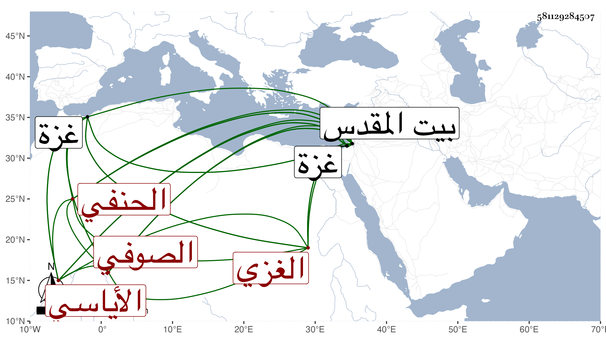

0902Sakhawi.DawLamic.ITO20230111-ara1.EIS1600.581129284507
Biography ID: 581129284507
293
محمد بن يوسف بن بهادر ناصر الدين أبو عبد الله الأياسي بكسر أوله ثم تحتانية نسبة لمعتق جده إياس الغزي الحنفي الصوفي . ولد بغزة سنة ثمان وخمسين وسبعمائة تقريبا وكان يقول لا أعلم تعيينه إلا أن الفقيه علي بن قيس قال لي حج والدك سنة تسع وخمسين فولدت فيها قال وأنا أعرف أن مولدي في سنة حج والدي وإنما استفدت تعيين السنة من ابن قيس ، ونشأ بها وسمع فيما أخبر بعد الثمانين على قاضيها العلاء أبي الحسن علي بن خلف الصحيحين والموطأ والشفا بجامعها العتيق العمري وأخذ عن ابن زقاعة في النحو وغيره وصحب الشمس العيزري وانتفع به وحمل عنه من نظمه وتصانيفه وغير ذلك وقدم عليهم غزة قاضيا الموفق الرومي الحنفي تلميذ أكمل الدين فلازمه في الفقه حتى أخذ عنه الكنز وغيره وفي العربية ، وكذا أخذ الفقه أيضا عن خير الدين خليل الرومي الحنفي قاضي القدس وبرع في العربية والفقه وأجاد الرمي وغيره من أنواع الفروسية ، وكتب حواشي على الشامل لابن العز وغيره بل شرى نظم الزبد لابن رسلان ، وتصدى للإقراء فانتفع به الفضلاء خلفا عن سلف مع زهده وصلاحه وانجماعه عن الناس وتواضعه مع وجاهته وجلالته عند نواب بلده وغيرهم وكونه لم يغير زي الترك في ضيق أكمامه وثيابه وأما عمامته فكانت بمئزر ولها عذبة على طريق الصوفية ومكث أربعين سنة فأزيد ما مس بيده درهما ولا دينارا ولا فكر في معيشته بل جهاته تحمل لزوجته فتتولى الإنفاق . وممن أخذ عنه الحسام بن بريطع والشمس بن المغربي القاضي وقال أنه أنشد عنه من نظمه :
| وما الدهر إلا ليله ونهاره | وما الناس إلا مؤمن مكذب |
| فإن كنت لم تؤمن ولم تك كافرا | فأين إذا يا أحمق الناس تذهب |
وقوله مذيلا ليقول العبد :
| ولا تستثن في الإيمان واقنع | بقول الصدر نعمان الكمال |
| إذا صفت النفوس كسبن نورا | وشاهدن الجمال مع الجمالي |
والعلاء الغزي فقيه المؤيد بن الأشرف إينال وبسفارة الشيخ استقر به إينال حين كان نائب غزة إمامه وحدث أخذ عنه جماعة كالعلاء بن السيد عفيف الدين وأجاز لي على يد ابن قمر وبلغني أنه أنشأ مدرسة تجاه داره ، وكان في أول أمره مشهورا بفرط التعصب لمذهبه ولم يزل على جلالته حتى مات في شوال سنة اثنتين وخمسين ودفن بمدرسته ولم يخلف بعده هناك مثله رحمه الله وإيانا .
